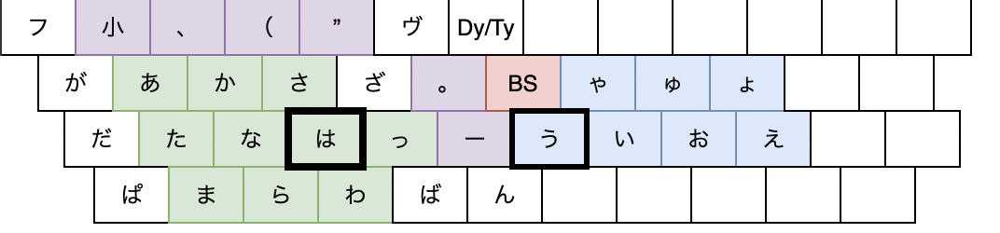
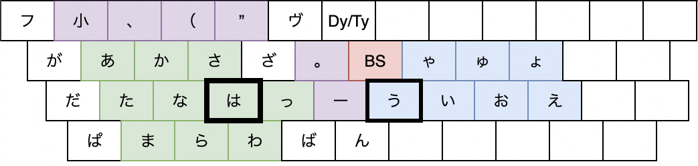

投稿日: 2021/12/26 22:31:07
カテゴリ: PC-F配列
サムネイル: 
新下駄配列の覚えにくさをどうにかしつつ、フリック入力との親和性を持たせられないかなーと考えて、初めて新しい配列を作ってみた。

詳細についてはGitHubのREADMEに記載している通りで、まだ初稿なのだけれど、初稿とはいえ何回も試した末なので、最初のアイデアとして完成していると思う。
コンセプトは PC (で) F (フリック) という名前のごとく、フリック入力との親和性を最重視した、同時打鍵系配列。そもそも自分自身が、パソコンでは新下駄配列＋Programmer's Dvorakを愛用しつつ、スマホでも片手フリック入力で結構な分量の文章を書くことから、フリック入力のようなシンプルさと新下駄配列の快適な打鍵感をかけ合わせられないかなと思ったのがきっかけ。
本当は赤外線デバイスとか使って、PCでもフリック入力できるようにするのが一番万人受けするのかもしれないけど、個人的に新下駄配列の打鍵感はとても好きで、なんとかこの２つをかけ合わせられないかという試行錯誤の第一弾。
何度か自分でいろんな言葉を試しにこの配列で打ってみたけれど、自分でも不思議なほど、まるで新下駄配列を打っているような、フリック入力しているような、なんとも不思議な感覚の配列で、練習は必要なものの、実用性は結構あるように感じた。
配列の覚えやすさとシンプルさを最重視しているので、同時打鍵数が多いなど、新下駄配列には効率上は到底及ばないものの、「誰にでも新下駄配列の感覚を」という初期コンセプトには沿った出来になっていると思う。
自分自身ももう少しこの配列を練習して、切り貼りでも動画を撮った上で、改めて解説記事を書こうかな。
（それにしても、この配列早くMacBookで打てるようにKarabinerに移植したいなぁ…。個人的に連続シフトが肝なので、その辺の設定がイマイチ自信がない…。）
[追記1] Karabiner版も変換ツールのおかげですぐできた。が、やっぱり連続シフトが課題。
[追記2] 可視化するためのビュワーは完成。あとはこれで動画撮るだけだ…ということで、誠意練習中。